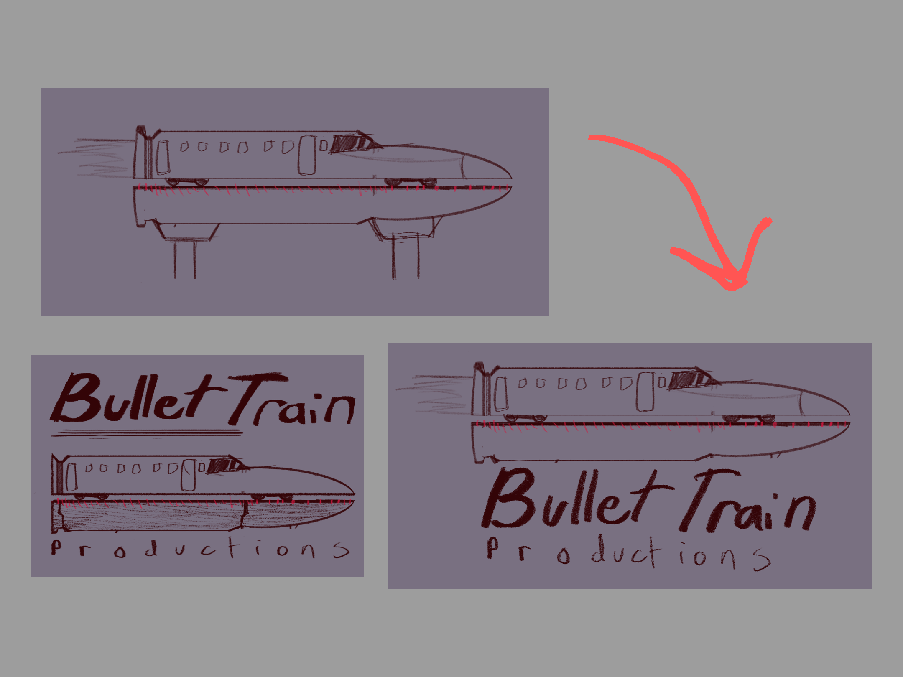
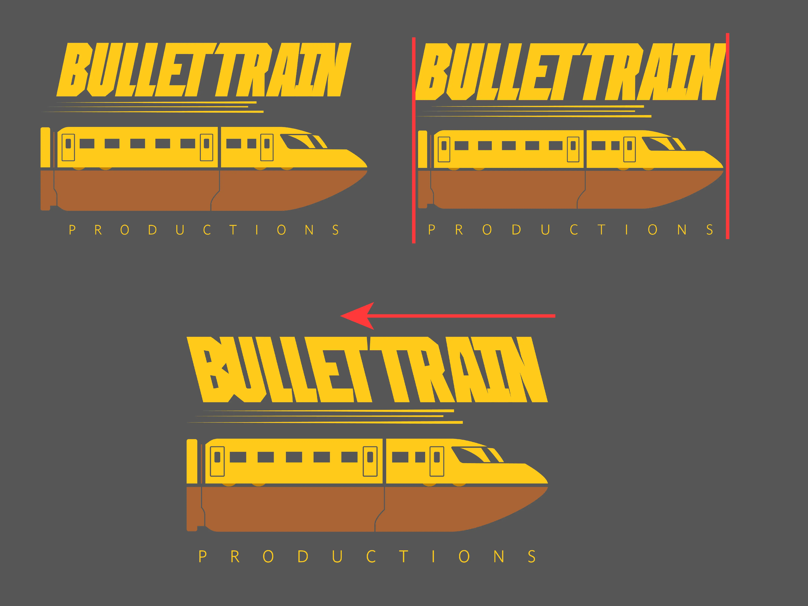

Bullet Train Productions Logo

Tools: Procreate and Adobe Illustrator
Timeline: 3-4 days
Tools: Procreate and Adobe Illustrator
Timeline: 3-4 days
Bullet Train Productions is a personal logo project created to explore typography-driven logo design. I wanted to experiment with wordplay using the name “Bullet Train,” imagining it as an intense, action-focused film production company. Before designing, I already had a core concept in mind: visually combining a bullet and a bullet train into a single symbolic mark that felt fast, cinematic, and modern.
During sketching, I focused on creating a modern, minimal-based logo using limited shapes and design elements. Since wordplay was central to the concept, I explored cutting a bullet in half, turning the top into a bullet train and the bottom into track bridge elements.
Originally, the bullet shape appeared too much like a jet, so I simplified it after researching actual bullet train designs. I also tested more complex perspectives (i.e. the image above), but ultimately chose the simpler view, since modern logo design favors clarity and scalability over detail. So to speak, the train and bridge were designed with strong, recognizable shapes so viewers could understand the symbol immediately, even at small sizes.

To support the “pun” in the business name, I chose warm colors such as yellows and copper-based hues to differentiate the elements while reinforcing the energy and intensity of the brand.
Warm tones were chosen for contrast and personality, while the simplified structure keeps the logo adaptable for both digital and print use. Additionally, the shapes and lines within the train and bridge are to be transparent in the final, as I also used color as an outline to mimic what the shapes are supposed to be (i.e. doors, windows, connected bridge, passenger cars)
To ensure flexibility, I tested monochromatic versions early to confirm the mark worked even without color or typography.
After designing the initial symbol in Illustrator using the Pen Tool and constantly Subtracting shapes based on the final sketch, I explored typography using Adobe Fonts. Since this was a typography-focused project, choosing the right typeface was essential to convey tone and motion. Admittedly, I do not have experience in creating my own fonts or typeface, so this was one of my only options for this project to save time.
I wanted the main title to feel heavy and powerful, while the secondary text remained lighter to balance the composition. I selected: Zuume Edge for the main title, and Parisine Std Clair for the subtitle (“Productions”)
To avoid the title looking generic, I customized the type by expanding the letters and trimming portions of the forms to improve spacing and visual interest. This helped the wordmark feel more integrated with the symbol instead of looking like default text.
To reinforce motion, I added speed lines beneath the title, echoing the feeling of the train rushing forward. I later resized the train and track bridge so they aligned better with both the main title and the subtitle for visual balance.
After reviewing the draft, I noticed the slant of the text conflicted with the direction of the train. Using the Shear tool (although in hindsight, I should have used the Free Transformation tool in the beginning before expanding the letters), I adjusted the angle so the typography visually “reacted” to the train’s speed and direction.

Once the layout and typography were finalized, I tested the logo using monochromatic colors. Aside from adjusting line weights on the wheels for clarity, the logo held up well with limited color, proving it was flexible and production-ready for multiple formats.
Although this was a personal project, it strengthened my understanding of minimal branding, symbol consistency, and balancing illustration and typography while remaining readable, scalable, and visually energetic.
This project helped me improve my approach to design consistency and simplicity. Working within a short timeline taught me how to create a polished, expressive logo without overcomplicating the concept. It also reinforced how important it is for every design choice, including shape, color, type, and motion to support the brand context.